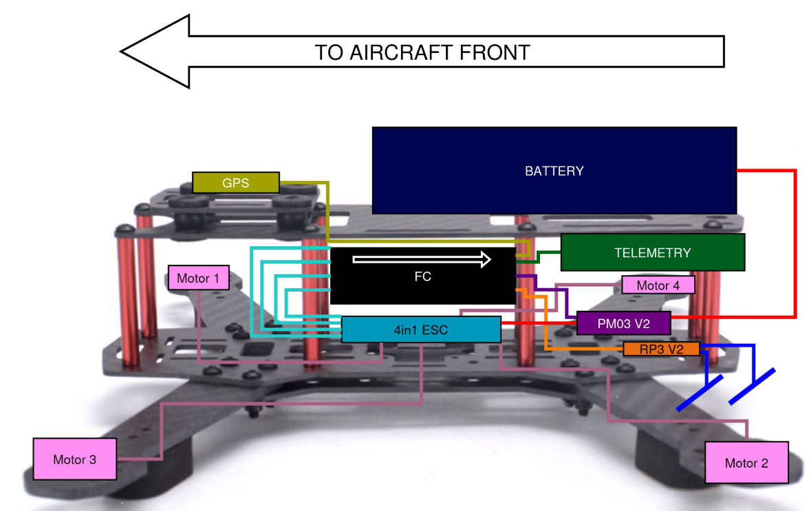
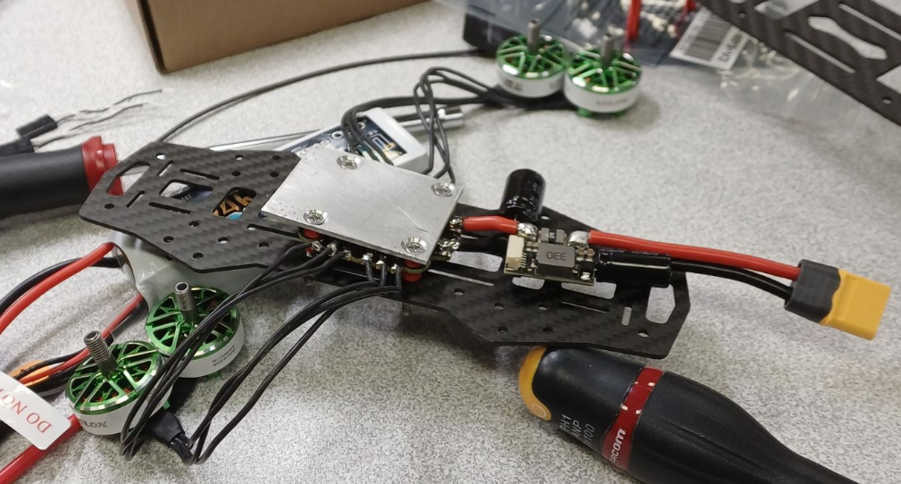

First UAV Build:
Hardware Assembly
Putting the QAV250 together — frame, motors, ESCs, flight controller, wiring

The finished QAV250 build — result of the assembly process described on this page.
Starting Point
With all components received and verified against the component selection plan, the next step was to actually assemble the drone. Before touching a soldering iron, every spec and connection was cross-checked: connector types, pin assignments, voltage compatibility, current ratings. The Pixhawk 6C Mini costs around 120 euros — not the kind of thing you want to destroy because you plugged something in backwards.
The assembly process is documented in detail in the build report linked at the bottom of this page.
Assembly Planning: Layout & Clearances
Before physically mounting anything, a component placement scheme was worked out — deciding where each element sits on the frame, taking into account several competing constraints:
- Mass distribution: keeping the centre of gravity close to the geometric centre of the frame for balanced flight dynamics.
- Electromagnetic compatibility: separating RF-sensitive components (GPS, RC receiver) from high-current switching elements (ESCs, battery leads) to reduce interference.
- Physical clearances: making sure nothing conflicts with prop wash, prop arcs, or the structural elements of the frame.
- Maintenance access: keeping connectors accessible without needing to disassemble half the drone.

Component placement analysis for the QAV250 — mapping out mass distribution, electromagnetic separation, and physical clearances before committing to the build.
Wiring & Cable Management
Wiring on a small quadrotor is more involved than it first appears. A few things that required particular care:
- Cable twisting: signal cable groups (Serial, I2C, PWM) were twisted appropriately to reduce crosstalk and electromagnetic noise — especially important near the flight controller.
- Connector identification: the GH1.25 connectors used throughout the Pixhawk ecosystem needed to be assembled properly with the GPS cable; compatibility checks were done
- Pinout Checks: since some connectors had to be resoldered, it is easy to do mistakes; thus further stressing the need for cross-checks
- ESC Checks: all other tutorials around the Web described the use of single ESCs, while my build uses 4-in-1 ESC board; compatibility had again to be checked.
3D Printed Parts and Retrofitting
Not everything fit perfectly out of the box. A few custom parts had to be designed and 3D printed to properly mount certain components on the QAV250 frame — mostly small brackets and spacers. Nothing exotic, but it was a good reminder that real builds rarely go exactly as planned. The exact parts are described in the build report.
Moreover, the Pixhawk 6C Mini flight controller did not fith through the carbon fiber frame (too large), which is a problem that appeared also on other QAV250 designs. Custom modifications, and the manufacturing of a specific support plate had to be made.
Assembly in Progress

Mid-assembly view of the QAV250 build — components being installed and wired before the final integration check.
Conclusion of the Hardware Build
By the end of the build, the QAV250 was fully assembled and flight-ready, weighing 682.2 g including battery. Flying drones heavier than 250g outdoors in Europe generally requires proper authorization, so obtaining a licence is the next step. The current setup also lacks a camera and VTx, which will be added in future iterations.
Documentation
The full hardware build process, including the 3D-printed parts, wiring decisions, and final assembly, is documented in the report below.